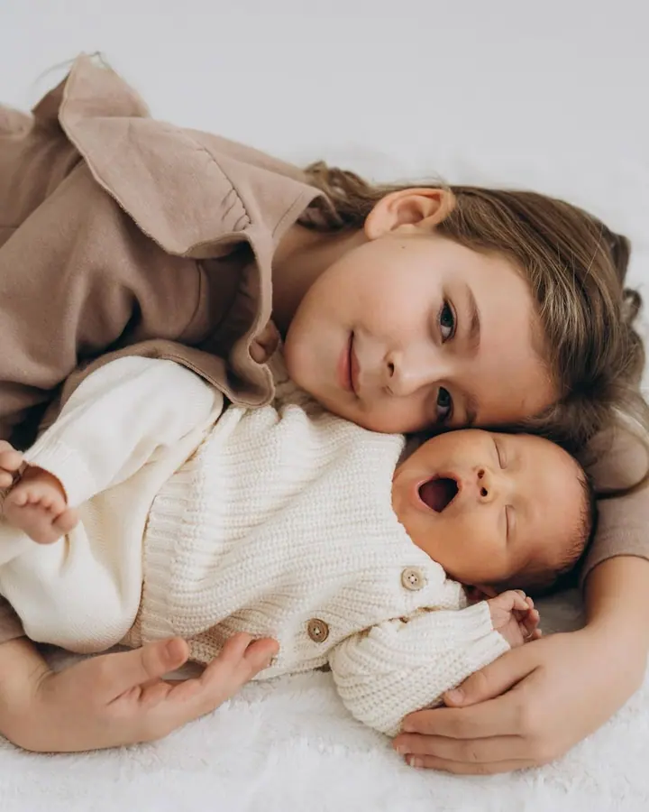

Rodinné focení
Při focení nechávám děti dětmi a fotím bez tlaku, nejradši momentky. Proběhneme se, zahrajeme hru nebo naházíme kamínky do rybníka, venku, u vás doma nebo v ateliéru.

Jmenuji se Kateřina Kostková a v Třebíči fotím rodiny, těhulky a miminka i svatby. Nejradši mám momentky bez pózování, protože jen v uvolněné atmosféře se dají zachytit …
Rezervovat termínFotím 100% s láskou. Při focení je pro mě nejdůležitější, abyste se všichni cítili dobře a mohli být sami sebou. Emoce, přirozenost a zážitek, to jsou tři věci, o které mi jde vždycky.


Děti nechávám dětmi. Nikoho do ničeho nenutím, raději se proběhneme, zahrajeme hru nebo naházíme kamínky do rybníka. Fotit můžeme venku ve městě i v přírodě, u vás doma nebo v ateliéru.
Na svatbách jsem většinu dne spíš pozorovatelem, který nechává věci plynout. Když je ale potřeba, zorganizuji skupinky, navedu vás při portrétech a pro nevěstu i ženicha jsem oporou, která uklidní a poradí.
Co fotím
Při focení nechávám děti dětmi a fotím bez tlaku, nejradši momentky. Proběhneme se, zahrajeme hru nebo naházíme kamínky do rybníka, venku, u vás doma nebo v ateliéru.
Newborn lifestyle focení u vás doma a Fresh 48 přímo v porodnici. Klidné první dny s miminkem, jak opravdu vypadaly.
Focení těhulek venku, doma nebo v ateliéru, samotných, s partnerem i se staršími sourozenci. Vzpomínka na čas, kdy se na miminko teprve těšíte.
Na svatbách fotím hlavně to, co se skutečně děje, bez zbytečného aranžování a nucených póz. Když je potřeba, citlivě vás navedu a postarám se, aby vše probíhalo v klidu a pohodě.
Postup
Napište mi, co budeme fotit a kde. Při závazném domluvení termínu se hradí rezervační poplatek 1000 Kč.
Vybereme místo, venku, u vás doma nebo v ateliéru, a poradím vám s oblečením. O ateliéru mi dejte vědět zavčas, ať ho stihneme zarezervovat.
Focení trvá 30 až 60 minut a probíhá v klidu a bez tlaku. Žádné pózování, spíš hra a čas strávený spolu.
U Malého příběhu si fotky vybíráte sami ze zaslaných náhledů, u Velkého příběhu vybírám já. Upravené fotky dostanete v online galerii, vhodné i v černobílé verzi.
Otázky
Venku ve městě i v přírodě, u vás doma nebo v ateliéru (ateliér za příplatek 1200 Kč). Cestovné do 10 km od Třebíče je zdarma, dál účtuji 10 Kč za kilometr.
Malý příběh trvá 30 až 60 minut, Velký příběh 60 minut. Vždy se přizpůsobím vám a hlavně dětem.
Malý příběh s 15 upravenými fotkami stojí 3900 Kč, Velký příběh s 50 až 100 fotkami 4900 Kč. Svatební ceník vám ráda pošlu na vyžádání, akce, křtiny a oslavy naceňuji individuálně.
Kromě svateb a akcí fotím od pondělí do pátku. Rodinné focení o víkendu je možné po domluvě za příplatek 1000 Kč.